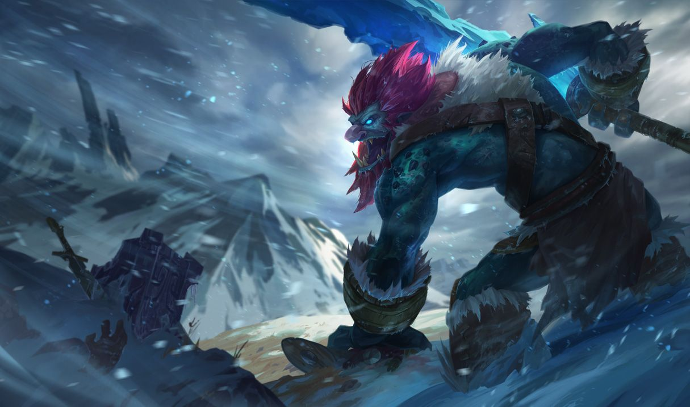

갱이 상당히 강한 캐릭터로 우리팀 탑이 다리우스, 이렐리아 같은 칼챔일 때 트런들을 픽하고 탑을 파면 게임을 쉽게 굴릴 수 있다.(하지만 탑이 킬먹고 던지면 그대로 진다)
트런들은 근처에서 적 유닛이 쓰러질 때마다 죽은 유닛의 최대 체력의 일정 비율만큼 체력이 회복됩니다. 어떤 상황에서든 트런들의 살갗을 이상할 정도로 질기게 만들어주는, 시간에 비례해 강력해지는 회복계 패시브. Q의 공격력 증가, W의 회복량 증가와 더불어 트런들의 안정성에 크게 기여하는 패시브이다. 죽은 적 유닛의 최대 체력의 일정 비율만큼 자신의 체력을 회복하는 초가스의 패시브와 유사한 패시브이다. 차이점은 초가스 패시브의 경우 적 유닛의 막타를 쳐야만 발동하지만, 이 패시브는 굳이 막타를 치지 않아도 패시브 범위 내에서 죽는 모든 적 유닛을 대상으로 발동한다는 점. 또한 본인 레벨 계수인 초가스와는 달리 이쪽은 상대 최대 체력의 일정 비율이다. 시간이 지남에 따라 미니언/정글몹/용/바론 등등의 몬스터들은 점점 체력이 올라가고 상대 챔피언도 렙업을 하며 체력이 올라가기 때문에 후반부로 가면 빛이 사그라드는 초가스와는 달리 이쪽은 18렙을 찍어도 활약하는 패시브다. 특히 바론이나 용의 회복량은 상상을 초월한다. 때문에 바론이나 용을 스틸 당했어도 회복된 체력을 기반으로 바론/용 잡느라 피가 너덜너덜해진 상대팀을 트런들이 몽둥이로 죄다 패죽이는 진풍경도 나온다.